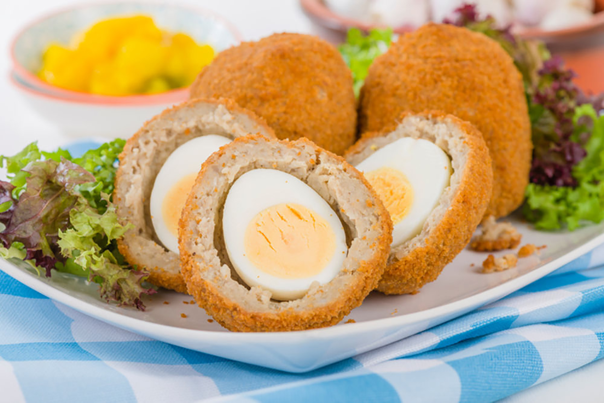

Scotch Eggs

Description
Soft-boiled eggs wrapped in sausage and bread crumbs, deep-fried for a
delicious savory treat.
They're a British pub favorite, perfect for family
occasions or picnics.
Ingredients
- 1 quart oil for frying
- 4 large eggs
- 2 pounds bulk pork sausage
- 1 cup all-purpose flour
- 4 large eggs, beaten
- 4 cups dried bread crumbs, seasoned
Steps
- Gather all ingredients. Preheat the oven to 350 degrees F
(175 degrees C). Heat oil in a deep-fryer to 375 degrees F (190 degrees
C).
- Place eggs in a saucepan and cover with water. Bring to
boil. Cover, remove from heat, and let eggs sit in hot water for 10 to 12
minutes. Remove from hot water, cool, and peel.
- Flatten sausage and make a patty to surround each egg.
- Very lightly flour the outer sausage layer then coat with
beaten egg. Roll in bread crumbs to cover evenly.
- Deep-fry prepared eggs in hot oil until golden brown while
making sure each side is well cooked.
- Bake in the preheated oven for 10 minutes.
- Cut in half.
- Serve and enjoy!